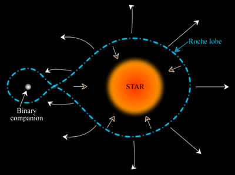
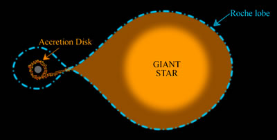

| The term ‘Roche-lobe’ is used to describe a distinctively shaped region surrounding a star in a binary systems. This teardrop-shaped space defines the region in which material is bound to the star by gravity. Any material outside the Roche-lobe of a star may, depending on its initial location, energy and momentum, either escape the system completely, orbit both stars, or fall onto the binary companion. |
 |
| To picture this more easily, imagine a close binary system in which one of the stars has expanded to become a red giant. Models show that if this star fills its Roche-lobe, material will flow onto the binary companion, often by way of an accretion disk. This Roche-lobe overflow occurs through the inner Lagrangian point where the gravity of the two stars cancels, and is responsible for a number of astronomical phenomena including novae, Type Ia supernovae, and many X-ray binary systems. |
 |
Interactive: Explore Roche lobe geometry and mass transfer in a binary star system. Open fullscreen.